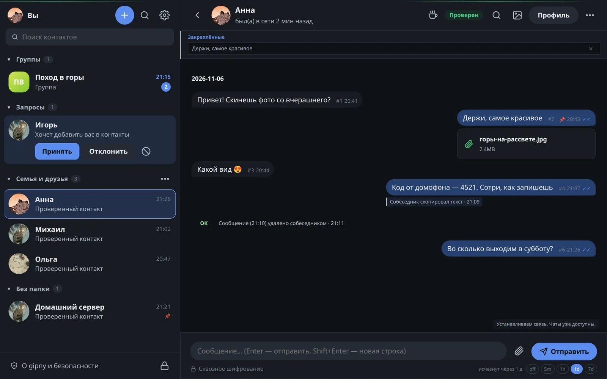
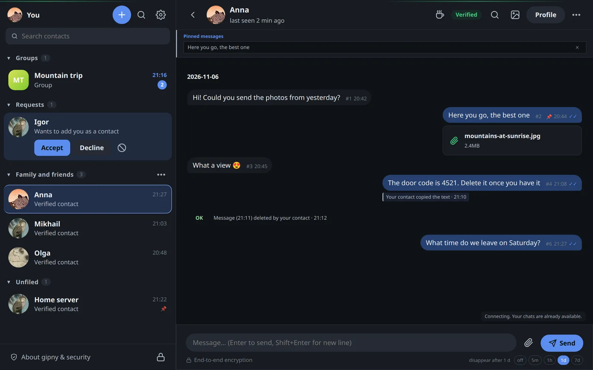
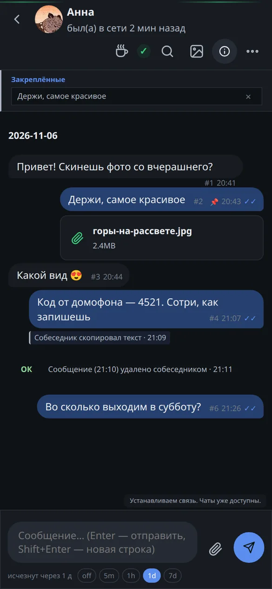
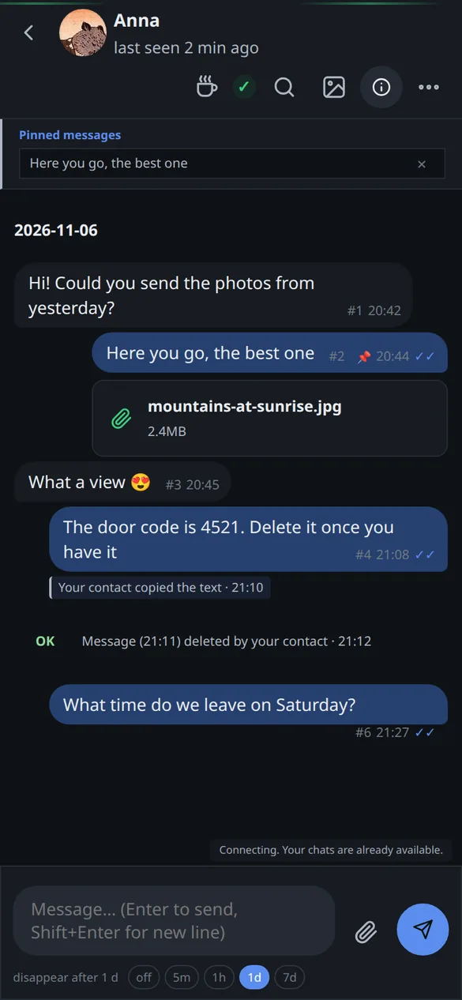

Ключ контакта вместо номера телефона.
Профиль создаётся локально, без регистрации по телефону или почте. Обменяйтесь карточками контакта и сверьте отпечатки по доверенному каналу.
Переписка со сквозным шифрованием
Общайтесь и передавайте файлы без привязки к номеру телефона. Ключи и история хранятся на вашем устройстве, а встроенный роутер подключает приложение к I2P.
Клиенты для Linux, Windows, macOS, Android и браузера.
Как это выглядит
Снимки сделаны на демонстрационном профиле: имена и переписка вымышлены.




На снимках — отметка «Собеседник скопировал текст», удаление, которое собеседник подтверждает кнопкой «ОК», файл, запрос контакта и таймер исчезновения сообщений.
Экспериментальная WASM-версия
Вы запускаете приложение на своём устройстве: WASM-ядро шифрует сообщения, хранит профиль и работает с I2P. GitHub Pages раздаёт код и обновления; сервер GitHub не участвует в доставке переписки.
| Вопрос | Обычная веб-версия | Gipny в браузере |
|---|---|---|
| Где ключи шифрования | На сервере сервиса или в телефоне, к которому привязан браузер | Только в этом браузере, в зашифрованном профиле |
| Где расшифровываются сообщения | Смотря какой сервис: на сервере или на связанном телефоне | Здесь же, в WebAssembly-ядре на вашем устройстве |
| Где хранится история | Обычно на серверах сервиса | В зашифрованном хранилище OPFS этого браузера |
| Что делает сервер сайта | Принимает, хранит и пересылает переписку | Только раздаёт файлы приложения и обновления |
| Что нужно для входа | Номер телефона или аккаунт сервиса | Пароль или ключ доступа к локальному профилю |
Нажмите на слой, чтобы узнать, что он делает и что может видеть.
Окно показывает чаты и передаёт команды ядру. Ключи и хранилище профиля в коде страницы не живут: они в отдельном потоке. Для WebRTC окно держит соединение, но через него проходят только зашифрованные байты.
В отдельном потоке браузера работает то же ядро на Rust, что и в приложениях. X3DH и Double Ratchet шифруют каждое сообщение, файлы делятся на зашифрованные части, а встроенный I2P-роутер сам строит туннели. Узлы сети роутер запоминает между запусками, поэтому повторный старт быстрее. Сервер сайта во всём этом не участвует.
Профиль хранится в приватной файловой системе браузера и зашифрован ключом из пароля через Argon2id или из ключа доступа (passkey с расширением PRF), если браузер его поддерживает. Файлы до 2 ГиБ лежат отдельными зашифрованными блоками. Очистка данных сайта удаляет профиль.
Браузер не умеет открывать прямые TCP-соединения, поэтому до первого узла I2P байты доходят через мост. Внутри уже зашифрованный трафик I2P поверх вашего сквозного шифрования. Мост пускает только к проверенным узлам I2P на допустимых портах. Он видит ваш IP, время и объём, но не ключи, не собеседников и не текст.
Сообщение уходит через исходящий туннель в почтовый релей собеседника и ждёт там зашифрованным, пока он его не заберёт. Собеседник может сидеть в браузере, на компьютере или на Android: протокол один и тот же.
В отличие от веб-оболочки, которая управляет запущенным на сервере мессенджером, Gipny выполняет эту работу в вашем браузере. Аккаунт GitHub, установленное приложение на телефоне и сопряжение с ним не нужны.
Браузерный клиент проходит проверку. Сетевому режиму нужен доступный транспортный мост; при его отказе нет скрытого обходного подключения.
Возможности и требования веб-версии
Нужны HTTPS, WebAssembly, Worker и OPFS. Очистка данных сайта удаляет локальный профиль. Перенос и зашифрованный экспорт браузерного профиля пока не реализованы.
Ключи и зашифрованная история остаются в OPFS. WASM работает в отдельном Worker. Браузер не предоставляет все механизмы защиты памяти и хранилища нативного приложения.
Перед вами сайт проекта. Он не отправляет и не принимает сообщения, не создаёт профили и не хранит ваши ключи.
Как это устроено
Профиль создаётся локально, без регистрации по телефону или почте. Обменяйтесь карточками контакта и сверьте отпечатки по доверенному каналу.
Личные чаты используют X3DH и Double Ratchet. Сообщения и файлы шифруются до передачи релеям, а расшифровываются на устройствах участников.
Отдельный роутер устанавливать не нужно. При недоступности I2P или релеев доставка может задержаться; прямой IP-канал для сообщений не используется.
История и ключи сохраняются на устройстве. Нативное приложение использует защищённое хранилище ОС; веб-клиент — зашифрованное хранилище браузера. Пароль защищает закрытый профиль, но не заражённую систему.
Файлы передаются зашифрованными частями. Получатель проверяет целостность файла до подтверждения завершения. Поддерживаемые изображения проходят очистку метаданных, если она включена; очистка PDF пока доступна только в нативном приложении.
Сверьте отпечаток контакта отдельным каналом. Обновляйте приложение из проверенного источника. Открытый код позволяет изучить защиту, но сам по себе не означает независимый аудит.
Под капотом
Везде одно ядро на Rust и один протокол. Отличается то, где живёт роутер I2P и чем защищено хранилище.
Слои защиты
Каждый слой закрывает свою угрозу. Откройте любой, чтобы увидеть, от чего он защищает и где проходит его граница.
При создании профиля генерируются ключ подписи Ed25519 и ключ обмена X25519. Ваш контакт — карточка с этими ключами, а не номер телефона. Сверьте отпечаток карточки по доверенному каналу: это защищает от подмены собеседника.
Первое сообщение устанавливает сессию по X3DH, дальше каждое сообщение шифруется новым ключом Double Ratchet (ChaCha20-Poly1305). Утечка одного ключа не раскрывает прошлую переписку, а после компрометации сессия снова становится секретной. В обычном режиме сообщения дополняются до фиксированных размеров, чтобы длина не выдавала содержание.
Сообщения идут через раздельные входящие и исходящие туннели I2P из нескольких узлов, и каждый узел знает только своих соседей. Адрес приложения в I2P новый при каждом запуске; постоянная личность — ваш ключ, а не сетевой адрес. Прямого IP-соединения с собеседником нет никогда.
Если собеседник не в сети, письмо ждёт его в почтовом релее зашифрованным. Получатель сначала сохраняет расшифрованное сообщение вместе с состоянием шифра одной транзакцией и только потом подтверждает релею доставку, поэтому сбой или переполненный диск не теряют сообщение.
Профиль — зашифрованная база (SQLCipher в приложениях, зашифрованный OPFS в браузере), ключ выводится из пароля через Argon2id. В приложениях ключ дополнительно привязан к защищённому хранилищу системы. По желанию история стирается при каждой блокировке, а сообщения — по таймеру.
Ключи в памяти хранятся запечатанными и затираются после использования. «Удалить у обоих» стирает сообщение и вложения на обоих устройствах и оставляет отметку, которую подтверждает собеседник; удалённое не возвращается при повторной доставке.
Возможности
Профиль — это ключи на вашем устройстве. Можно держать несколько профилей с разными паролями.
Файл идёт зашифрованными частями, докачивается после обрыва и проверяется по SHA-256, прежде чем станет доступен. Из изображений и PDF можно убирать метаданные (PDF — в приложениях).
Сообщение и его файлы исчезают у вас и у собеседника, а на их месте остаётся короткая отметка о том, кто и когда удалил. Собеседник подтверждает её кнопкой «ОК».
Задайте срок жизни сообщений в чате: по его истечении они удаляются на обоих устройствах. Историю можно не хранить вовсе и стирать при каждой блокировке.
Если собеседник скопировал ваш текст, сохранил ваше вложение или нажал сочетание клавиш снимка экрана, под сообщением появится отметка. Содержимое при этом никуда не передаётся. Это сигнал, а не запрет: сфотографировать экран телефоном по-прежнему можно.
Группы до 64 участников. Каждое сообщение шифруется отдельно для каждого участника, а менять состав может только тот, кто уже в группе.
Незнакомец не может сразу писать вам в чат: сначала приходит запрос, и до вашего согласия его файлы не скачиваются.
Назначьте контакт хозяином, и он сможет выполнять команды на вашем компьютере или сервере через зашифрованный чат. Режим включается явно и выключается одним нажатием.
Обычный режим бережёт анонимность. Быстрые режимы укорачивают туннели и отключают выравнивание размеров ради скорости, и эту цену вы выбираете сами.
Технология I2P
I2P передаёт сообщения через зашифрованные туннели. Для связи не нужны номер телефона и прямое соединение с собеседником.
Отдельные входящие и исходящие туннели распределяют маршрут между несколькими узлами. Защита зависит от выбранного профиля и возможностей наблюдателя.
Вместо IP собеседники обмениваются контактными ключами и I2P-адресами. Отпечаток ключа проверяйте по доверенному каналу.
Роутер встроен в нативное приложение; в веб-клиенте он работает как WASM. Переписка доставляется внутри I2P.
При первом запуске роутер получает сведения об узлах и строит туннели. Это может занять несколько минут.
Многослойное шифрование и прохождение через несколько промежуточных узлов увеличивают отклик, расход трафика и нагрузку на батарею по сравнению с централизованными мессенджерами.
Нативный I2P использует NTCP2/SSU2. Для браузера предусмотрены WSS и WebRTC через транспортный мост. Они меняют вид соединения, но не гарантируют нераспознаваемость; WebRTC и CDN требуют отдельной проверки.
Готовые пакеты
Одна загрузка для вашей системы. Если браузер скрывает тип процессора, уточните устройство в списке. Все пакеты, контрольные суммы и инструкции доступны в релизах GitHub.
Приложения для компьютеров и Android
Личные чаты, группы, вложения и проверка контактов работают в приложении. На странице релиза есть пакеты, поддерживаемые архитектуры и инструкции; перед установкой проверьте требования к системе.
Открыть загрузкиRust Tauri i2pd
Выберите пакет для своей системы и архитектуры. Прочитайте инструкцию по установке и требования к защите устройства.
Задайте пароль. Приложение создаст личность и ключи локально; для хранилища нужен поддерживаемый механизм защиты операционной системы. Дайте I2P время подключиться.
Передайте свою карточку по доверенному каналу и добавьте карточку собеседника. Прежде чем обсуждать важное, сравните отпечатки контакта.
В планах
Направления развития; наличие пункта в планах не означает готовую функцию.
Удобные имена для обмена контактами. Владение именем и защита от подмены ещё требуют доработки; сейчас используйте карточки и отпечатки.
Аудио и видео — отдельное расширение. Транспорт WebRTC для переписки сам по себе ещё не означает поддержку звонков.
Независимая подпись издателя и происхождение пакетов. Возможность убрать предупреждения ОС зависит от требований платформы.
Планируем зеркала страницы в .onion и .i2p с адресами, содержащими gipny. Ключи и адреса будут проверены перед публикацией; действующих зеркал пока нет.
План зеркал и проверки адресовОткрытая разработка
Исходники, архитектура и описание защиты доступны публично. Следите за разработкой, изучайте известные ограничения и сообщайте о проблемах.